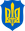
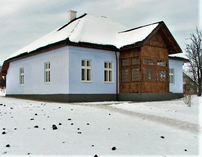

Бандера Степан Андрійович
Матеріал з Вікіпедії — вільної енциклопедії.
У Вікіпедії є статті про інших людей із прізвищем Бандера.
Степан Андрійович Бандера

Степан Андрійович Бандера
.png) 1-й Голова
ОУНР
1-й Голова
ОУНР
10 лютого 1940 — 15 жовтня 1959
| Попередник | посада запроваджена |
|---|---|
| Наступник | Степан Ленкавський |
|  7-й крайовий провідник ОУН | |
| 10 лютого 1940 — 15 жовтня 1959 | |
| Попередник | Богдан Кордюк |
| Наступник | Осип Мащак |
| Народився |
1 січня
1909
с. Старий Угринів, нині Калуського району, Івано- Франківська область, Україна |
{kind=link}
.jpg){kind=link}
Степа́н Андрі́йович Банде́ра ( 1 січня 1909, Калуський повіт, с. Старий Угринів, Королівство Галичини та Володимирії, Австро-Угорщина, нині Калуського району, Івано-Франківська область, Україна — 15 жовтня 1959 , Мюнхен , Баварія , Федеративна Республіка Німеччини ) — український політичний діяч революціонер, один із радикальних та чільних ідеологів, практиків і теоретиків українського націоналістичного руху XX століття [1] , після розколу Організації українських націоналістів — голова Проводу ОУН-Б [2] . Разом з Миколою Лебедем був одним зі організаторів вбивства Броніслава Перацького за політику пацифікації та вбивства Олексія Майлова через проведення спланованого та штучного організованого голоду на українських землях 1932—1933.
Як активний діяч УВО та ОУН має законодавчо визначений статус Борець за незалежність України у XX сторіччі [3] . В 2010 посмертно нагороджений званням герой України . Вважається національним героєм України. У 2008 році був визнаний третім зі ста великих українців після Ярослава Мудрого та Миколи Амосова за підсумками голосів в опитуванні громадської думи "Великі Українці" .
Степан Бандера та Ярослав Стецько були авторами Акта відновлення Української Держави 30 червня 1941 року. 5 липня 1941 року Бандеру помістили під домашній арешт, а з 15 вересня 1941 року — у центральну Берлінську в'язницю. З початку 1942 року по серпень 1944 року перебував у концтаборі Заксенгаузен у бункері «Целленбау» у відносно комфортних умовах Ярослав Стецько [4]. У вересні 1944 року його звільнили й запропонували участь у керівництві антирадянського збройного руху в тилу Червоної армії [5] [6] , однак Бандера відхилив пропозицію та на співпрацю не погодився [7] [8] . С. Бандера і Ярослав Стецько у квітні 1944 року на нараді обговорювали завдання підривної діяльності проти СРСР з керівником таємних операцій вермахту Отто Скорцені. [9] [10] Представники ОУН(б) та УПА, яку створила ОУН(б), в цей час проводили переговори, почали і продовжували співпрацювати з німцями, [11] [12] [13] [14] [15] [16] [17] хоча інші підрозділи УПА ще воювали з нацистами в 1944 році. [18] Разом з Андрієм Мельником , Адрієм Лівицьким та Павлом Скоропадським став співзасновником Українського національного комітету.
Радянський уряд уповноважив КДБ вчинити вбивство Степана Бандери в Мюнхені, ФРН. Це здійснив радянський агент Богдан Сташинський 15 жовтня 1959 року [19] .
Оцінки Степана Бандери вкрай суперечні. Після розпаду СРСР для багатьох українців його ім'я стало символом боротьби за незалежність України. Натомість багато мешканців Польщі та Росії ставляться до нього вкрай негативно, звинувачуючи у фашизмі , тероризмі , радикальному націоналізмі , що зокрема виявлялось у фізичній ліквідації лідерів відмінних від ОУН(б) українських націоналістичних течій, і колабораціонізмі [20] [21] . Визначення «бандерівці» , похідне від його прізвища, поступово стало загальним і застосовним для радянської та російської пропаганди до всіх українських націоналістів, незалежно від їхнього ставлення до Бандери [22] [23] [24] .
Зміст
- 1 Родина
- 2 Дитячі роки (1909—1927)
- 3 Юність (1927—1934)
- 4 В ув'язненні. Вихід із в'язниці (1936—1939)
- 5 Друга світова війна та післявоєнні роки
- 6 Останні роки
- 7 Убивство
- 8 Акти вандалізму
- 9 Трагічна доля рідних Степана Бандери
- 10 Погляди Степана Бандери
- 11 Ушанування пам'яті
- 12 Акти вандалізму на могилі
- 13 Книги про Бандеру
- 14 Фільми про Бандеру
- 15 Пісні про Бандеру
- 16 Ставлення в суспільстві
- 17 Див. також
- 18 Примітки
- 19 Джерела
- 20 Посилання
Родина
Народився 1 січня 1909 року в селі Старий Угринів, нині Калуського району, Івано-Франківської області, Україна тоді Калуський повіт, Королівство Галичини та Володимирії, Австро-Угорщина).
Батько: о. Андрій Бандера, (11.12.1882—10.07.1941) греко-католицький священник, був у той час парохом у селі Старому Угринові. Походив із міста Стрия.
Мати Мирослава Бандера, (1890—1921) походила з давньої священницької родини Глодзінських (була донькою греко-католицького священника із села Старого Угринова).
Дідусь: Володимир Ґлодзінський, (1836—1931) священник Української Греко-католицької церкви , дід Степана по материнській лінії.
Брати: Олександр (25.03.1911—кінець липня 1942), Василь (12.02.1915—21.07.1942), Богдан (04.04.1919—?).
Сестри: Марта-Марія (22.06.1907—13.11.1982), Володимира 10.03.1913—11.07.2001), Оксана (22.12.1917—24.12.2008).
Дружина: Ярослава Бандера , (14.09.1917 — 17.08.1977) походила з родини Опарівських, українська політична діячка.
Діти: Наталя (26.05.1941—13.01.1985), Андрій (16.05.1946 — 19.07.1984) [25] , Леся (27.08.1947—16.08.2011) [26] [27] .
Онук: Степан Андрійович Бандера ( 1969 ), народився у Вінніпезі Вінніпезі ( Канада ), має диплом Колумбійського університету . Нині працює журналістом, як і його батько, який видавав у Канаді англомовну газету Ukrainian Echo [29] .
Збереглася докладна автобіографія Степана Бандери [30] .
Дитячі роки (1909—1927)
- 
-
Будинок в Старому Угринові,де Бандера народився і провів перші 10 років життя
{kind=link}
{kind=link}
Степан Бандера в Пласті (1923)
Степан Андрійович Бандера народився 1 січня 1909 року в галицькому селі Старий Угринів , на території королівства Галичини і Лодомерії , що входило у склад Австро-Угорської монархії. Його батько, о. Андрій Михайлович Бандера, був греко-католицьким священником і походив з родини стрийських міщан-хліборобів Михайла й Розалії Бандер. Дружина Андрія Михайловича, Мирослава Володимирівна (1890—1922), у дівоцтві Ґлодзінська, була дочкою греко-католицького священника зі Старого Угринова о. Володимира Ґлодзінського і його дружини Катерини. Степан був другою дитиною в сім'ї після старшої сестри Марти-Марії (1907—1982). Надалі в сім'ї народилося ще шестеро дітей: Олександр (1911—1942), Володимир (1913—2001), Василь (1915—1942), Оксана (1917—2008), Богдан (1921—1944?) і Мирослава (народилася й померла в 1922) [31] [32] .
Фронти Першої світової війни 4 рази в 1914- – 1915 і 1917 пересувалися через його рідне село. Улітку 1917 року жителі Галичини стали свідками проявів національно-революційних зрушень і революції в армії царської Росії . У власній автобіографії Степан Бандера згадує також про «велику різницю між українськими та московськими військовими частинами».
З дитинства С. Бандера був свідком відродження й розбудови Української держави. З листопада 1918 його батько був послом до парламенту Західноукраїнської Народної Республіки — Української Національної Ради — в Станиславові й брав активну участь у формуванні державного життя Калущини .
У травні 1919 року під час наступу польських військ Степан (разом з усією родиною військового капелана УГА Андрія Бандери )був евакуйований до подільського містечка Ягільниці , де родина перебувала до вересня (батько в липні відступив разом з Галицькою Армією за Збруч ) [33] . Дорогою до Ягільниці кілька днів родина о. Андрія проживала в домі родини Гафтковичів у м. Бучачі [34] .
{kind=link}
Церква в Старому Угринові, в якій хрестили Степана
У вересні або жовтні 1919 року Степан Бандера вступив до української гімназії у Стрию, де вчився до 1927 року. У третьому класі (від 1922 р.) він став учасником Пласту ; у Стрию був у 5-му пластовому курені імені князя Ярослава Осмомисла , а по закінченню гімназії — у 2-му курені старших пластунів «Загін Червона Калина».
Навесні 1922 р. від туберкульозу горла померла його мати.
Юність (1927—1934)
У середині 1927 року Бандера успішно склав випускні іспити (матуру) в гімназії й вирішив вступити до Української господарської академії в Подєбрадах ( Чехословаччина ), проте польська влада відмовила в наданні молодій людині закордонного паспорта, тому він був змушений на рік залишитися в Старому Угринові. У 1927 – 1928 роках Степан Бандера переймався культурно-освітньою та господарською діяльністю в рідному селі (працював у читальні «Просвіти», провадив театрально-аматорський гурток і хор, заснував руханкове товариство «Луг» і належав до засновників кооперативів). При цьому керував організаційно-вишкільною роботою по лінії підпільної УВО в довколишніх селах.
{kind=link}
Степан Бандера — пластун куреня «Червона калина». Фото 1929 або 1930 року
У вересні 1928 року він переїхав до Львова й там записався на агрономічний відділ Високої Політехнічної Школи , де вчився до 1933 року. Перед дипломним іспитом через політичну діяльність його арештували й ув'язнили.
У студентські роки брав активну участь в організованому українському національному житті. Був членом українського товариства студентів політехніки «Основа» та членом управи Кружка студентів-рільників. Деякий час працював у бюро товариства Сільський Господар, що займався розвитком агрокультури на західних українських землях. З товариством «Просвіта» їздив у неділі та свята у поїздки в довколишні села Львівщини з доповідями та на допомогу в організації інших подій. У ділянці молодіжних і спортивно-руханкових організацій був активним передусім у Пласті, як член 2-го куреня старших пластунів «Загін Червона Калина», в Українському Студентському Спортовому Клубі (УССК), а деякий час теж у товариствах «Сокіл-Батько» й «Луг» у Львові. Займався бігом , плаванням , лещетарством , мандрівництвом . У вільний час залюбки грав у шахи, крім того, співав у хорі та грав на гітарі й мандоліні . Не палив і не вживав алкогольних напоїв .
У 1932 – 1933 рр. виконував функцію заступника крайового провідника , а в середині 1933 р. був призначений крайовим провідником ОУН і крайовим комендантом УВО на ЗУЗ . У липні 1932 р. Бандера з кількома іншими делегатами від КЕ ОУН на ЗУЗ брав участь у Конференції ОУН у Празі (так звана Віденська Конференція , яка була найважливішим збором ОУН після установчого конгресу). У 1933 р. брав участь у конференціях у алкогольних напоїв Берліні й Гданську.
Під керівництвом Бандери, ОУН відходить від експропріаційних акцій і починає серію каральних акцій проти представників польської окупаційної влади. У цей період оунівці здійснили три політичні вбивства, що отримали значний розголос: убивство шкільного куратора Гадомського, звинувачуваного в нищенні поляками українського шкільництва та полонізації ; убивство Олексія Майлова , секретаря консульства СРСР у Львові, який був одночасно агентом ГПУ при НКВС — як протест проти Голодомору в Україні; та вбивство Броніслава Перацького , міністра внутрішніх справ Польщі, за керівництва якого польська влада провела криваві акції «пацифікації» (умиротворення) українців . Степан Бандера здійснював загальне керівництво замахами на Майлова [35] та Перацького [36] .
{kind=link}
21 жовтня 1928: Генеральна рада «Загону Червона калина» в Академічному домі у Львові. Зліва праворуч сидять: Степан Охримович, Володимир Калинович, Володимир Ерденбергер, Євген Пеленський, Богдан Чехут, Осип Грицак, Роман Ерденбергер, Михайло Поточняк. Стоять: Осип Тюшка, нн, Остап Каратницький, Степан Бандера, Юліан Гошовський, Ярослав Рак, Ярослав Падох, Роман Щуровський